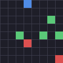
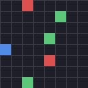
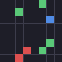

A procedurally-generated creature-collection RL environment for measuring long-horizon agency and in-context rule inference.
Each baseline is scored on held-out seeds (unseen maps and a new hidden type-chart) it never trained on. The rank is by held-out mean — the benchmark rewards generalization to worlds never seen.
| rank | baseline | held-in | held-out | gap |
|---|---|---|---|---|
| 1 | scripted | 3.480 | 3.740 | -0.260 |
| 2 | random | 2.200 | 1.960 | 0.240 |
Pinned spec (reproducible): {"grid_size": 10, "max_steps": 200, "n_heldin": 100, "n_heldout": 100, "num_creatures": 5, "num_gyms": 3, "patch_radius": 2}
Held-in vs held-out mean per baseline — a small gap means the score is real generalization, not memorization of seen worlds.
A gym-seeking scripted demo agent, dropped into an unseen held-out world (a new map and a new hidden type-chart), navigates the map, battles at the gyms, and defeats the boss — no training on this world (demo-only policy; distinct from the ranked “scripted” baseline row):
How does a gym battle actually work? Read the exam mechanics →
Catching (C) is a separate scoring subgoal — battles are fought by a fixed starter party, and a caught creature never changes battle strength (this closes the collect-to-win grinding shortcut).
Measures: long-horizon planning under a small egocentric view, inferring a hidden, per-world type chart from observed damage (experiment → observe → remember → reuse), and generalization to unseen worlds.
Deliberately does not measure: RPG-style resource and progression management. There is no wild grinding, catching never adds battle strength, and levels only come from winning — every “win without understanding” shortcut is closed on purpose, like banning calculators in a math exam.
On an inference-gated sealed config, we measure how often each arm plays a super-effective move — i.e. exploits the hidden type-chart. A chart-knowing expert (oracle) reads ~100%; a scripted inferrer reads high; a chart-blind baseline reads near zero. The clean separation is what makes the eval measure in-context inference — un-memorizable, un-gameable.
This is the free scripted band (reproducible). A frontier LLM was probed separately (a paid, evaluator-local run) and read low — near the chart-blind floor, inconclusive; that number is not shown on this reproducible chart.
Each held-out seed regenerates a different map and a different hidden type-chart — so a submission can never have trained on the world it is scored on. Three held-out worlds:



Curated difficulty grades from the tier API (critter_gym.env_tier — the notes below are rendered verbatim from the code, so this page can never claim more than the code does). In the prototype buyer flow (a demonstrated artifact, not a live service), a buyer picks a tier, gets a signed, secret-free manifest for its sealed eval, submits, and receives a signed contamination-proof certificate bound to that tier.
| tier | world | harder knobs | difficulty (measured facts, verbatim from code) |
|---|---|---|---|
| standard | 10×10, 5×5 view, 3 gyms, 200 steps | (baseline) | The free-baseline difficulty (CritterEnv defaults). A scripted oracle clears it comfortably; a feedforward PPO reaches a large fraction of oracle. |
| hard | 16×16, 5×5 view, 3 gyms, 300 steps | grid_size, max_steps | Measured hard config (larger map + longer horizon at a small fixed view). A feedforward PPO reaches only ~11-16% of the scripted oracle here (vs ~41% at grid10), while the oracle stays winnable (~2.81 gyms). A recurrent PPO was measured at a related, deeper grid16 config (5 gyms, 420 steps): ~32-43% of oracle -- still far below the ceiling. OPEN (unmeasured): recurrent agents at this exact tier config, and SOTA-class difficulty anywhere -- do not claim it as SOTA-hard. |
Honest scope. Tiers and the signed-certificate flow are prototype artifacts (custom tiers are validated, not measured). Real sale, pricing and hosting stay a human decision.
Race your own model on the seasonal public exam set: every season issues a fresh, openly-derived block of held-out worlds (procedural generation means the exam can always be re-issued — a fixed benchmark can't). Run locally, submit a small JSON, appear here. The metric is mean gym-clears on the season block.
season_seeds(1, 16) and the pinned season_spec().community_submit.py --demo (a scripted policy) or --llm (an LLM agent).community_submit.py --validate your-file.json.community/submissions/. Once it's merged, you're on the board.Full step-by-step guide → Browse submissions →
| rank | model | submitter | gym-clears (mean) | worlds | date |
|---|---|---|---|---|---|
| 1 | scripted-baseline (organizer example) | crittergym (organizer) | 0.750 | 16 | 2026-07-02 |
Honest scope. These scores are self-reported (honor system): every submission must carry a reproduce command, but the numbers are not verified by us. Verified, contamination-proof results are the sealed track (signed certificates). This is a prototype — submissions open when announced (a human decision).
Honest scope. This is a prototype launch page, not a hosted product. Sealing here is in-process (a hosted eval-as-a-service needs server-side secret seeds + a submission sandbox). The gameplay clip is a scripted baseline (not a trained or LLM agent); leaderboard numbers are the free baselines via scripts/build_site.py. Publishing this page is a human decision. Generated: scripted/free baselines.